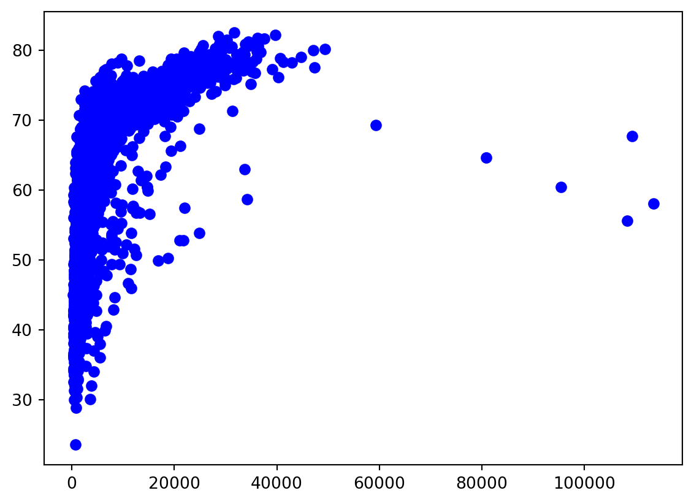
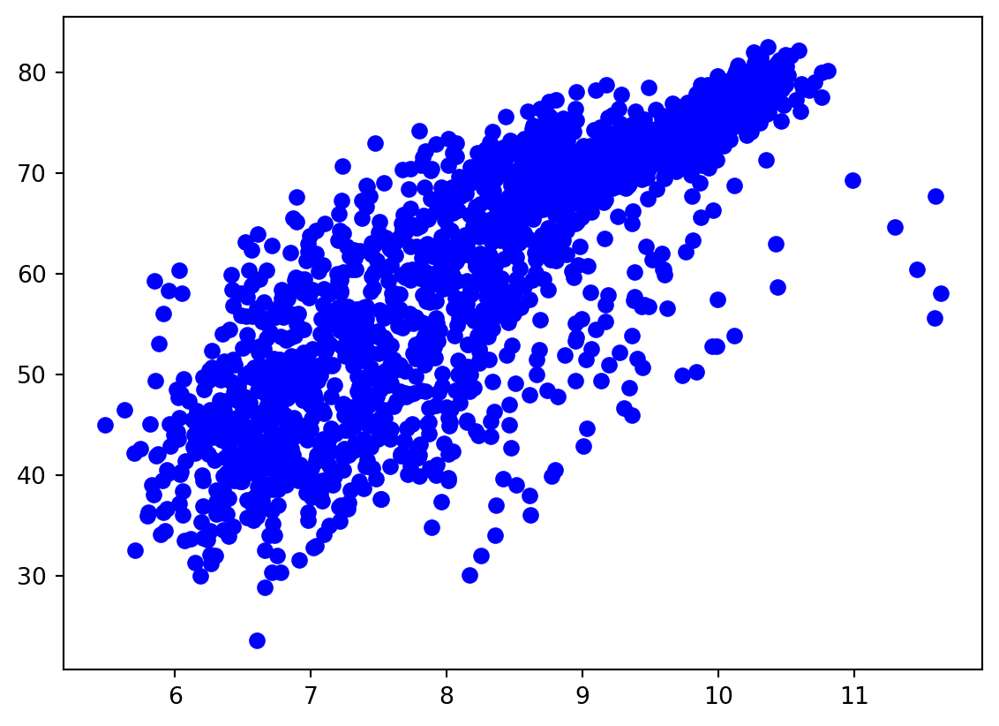
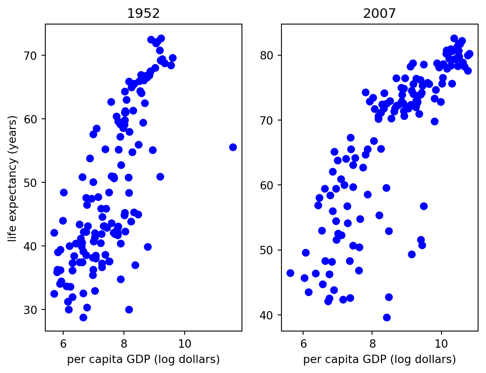

Code
pow(-1, 0.5)
(-1)**0.5
import math
(math.ceil(3/4) * 4)**364Using the section on “Built-in Types” from the official “The Python Standard Library” reference, figure out how to compute: - \(\sqrt{-1}\) - \((\lceil \frac{3}{4} \rceil \times 4)^3\),
pow(-1, 0.5)
(-1)**0.5
import math
(math.ceil(3/4) * 4)**364Is 1.0 of the integer type? What about 1? Is the result of 5/3 - 2/3 of the integer type? Is the mathematical value seen in Python an integer?
Here’s a numerical puzzle. Why does the last computation not work, when the others do? And, for those of you coming from R, which of these computations don’t work in R?
100000**10
100000.0**10
100000**100
100000.0**100type(1.0)
type(1)
type(5/3-2/3)
5/3-2/3 == 1
type(100000**10)
type(100000.0**10)floatNote that ? and ?? only work in IPython (or a Jupyter notebook). For help in plain Python, use help(np.ndim).
What happens if you type np.ndim?? (i.e., use two question marks)? What additional do you see?
What does np.ndim() do? How does it execute under the hood? Consider why the following uses of ndim both work.
a = np.array([0, 1, 2])
a.ndim
np.ndim(a)Now explain why only one of these works.
a = [0, 1, 2]
a.ndim
np.ndim(a)Type np.array? in a Notebook or at the IPython prompt. Briefly skim the docstring. nparray allows you to construct numpy arrays.
Type np. followed by the <Tab> key in a Notebook or at the IPython prompt. Choose two or three of the completions and use ? to view their docstrings. In particular, pay attention to the examples provided near the end of the docstring and see whether you can figure out how you might use this functionality.
a = [0, 1, 2]
# a.ndim # This errors out.
import numpy as np
np.asarray(a)
np.asarray(a).ndim1Using the following code, read in the GapMinder data using Pandas (to be discussed later) and run the following code to make the variables easily available (you don’t need to know anything about Pandas).
import numpy as np
import pandas as pd
dat = pd.read_csv('gapminder.csv')
lifeExp = np.array(dat.lifeExp)
gdpPercap = np.array(dat.gdpPercap)
year = np.array(dat.year)
## Hint: slicing using an array of booleans
## gdpPercap[year > 2010]lifeExp vs gdpPerCap for 2007; make sure you have nice axis labels and title.import numpy as np
import pandas as pd
dat = pd.read_csv('gapminder.csv')
lifeExp = np.array(dat.lifeExp)
gdpPercap = np.array(dat.gdpPercap)
year = np.array(dat.year)
import matplotlib.pyplot as plt
myplot = plt.plot(gdpPercap, lifeExp, 'bo')
plt.show()
myplot = plt.plot(np.log(gdpPercap), lifeExp, 'bo')
plt.show()
fig = plt.figure()
subplot1 = fig.add_subplot(1, 2, 1)
subplot2 = fig.add_subplot(1, 2, 2)
subplot1.plot(np.log(gdpPercap[year == 1952]), lifeExp[year == 1952], 'bo')
subplot2.plot(np.log(gdpPercap[year == 2007]), lifeExp[year == 2007], 'bo')
subplot1.set_title('1952')
subplot2.set_title('2007')
subplot1.set_xlabel('per capita GDP (log dollars)')
subplot1.set_ylabel('life expectancy (years)')
subplot2.set_xlabel('per capita GDP (log dollars)')
plt.show()


Create a list of numbers, called x1. Reverse the order of the items in the list using slicing. Now reverse the order of the items using a list method. How does using the method differ from slicing? Hint: you can type x. followed by the <Tab> key in a Notebook or at the IPython prompt to find the various methods that can be applied to a list.
x1 = [1, 2, 3, 4]
print(x1[::-1])
print(x1)
x1.reverse()
print(x1)[4, 3, 2, 1]
[1, 2, 3, 4]
[4, 3, 2, 1]x. followed by the <Tab> key in a Notebook or at the IPython prompt to find the various methods that can be applied to a list.)x1 = [1, 2, 3, 4]
x2 = ['apple', 'banana']
print(x1 + x2)
x1.append(x2)
print(x1)
x1 = [1, 2, 3, 4]
x1.extend(x2)
print(x1)
# x1.sort() # This errors out.[1, 2, 3, 4, 'apple', 'banana']
[1, 2, 3, 4, ['apple', 'banana']]
[1, 2, 3, 4, 'apple', 'banana']What does the following tell you about copying and use of memory in lists in Python?
a = [1, 3, 5]
b = a
id(a)
id(b)
# this should confirm what you might suspect
a[1] = 5What does the following tell you about copying and use of memory in lists in Python?
a = [1, 3, 5]
b = a
id(a)
id(b)
print(id(a) == id(b))
a[1] = 5
a
bTrue[1, 5, 5][1, 2, 3] + 3 returns. Try to explain what happened and why.range function may be helpful as might the enumerate function.[1, 2, 3] to be a numpy array and then add three using + 3.mylist = [1, 2, 3]
## for loop
for i in range(len(mylist)):
mylist[i] += 3
## list comprehension
[x+3 for x in mylist]
## numpy (best!)
nplist = np.array([mylist]) + 3Define a function called sqrt that will take the square root of a number and will (if requested by the user) set the square root of a negative number to 0.
def sqrt(x, complex=False):
if complex and x < 0:
return 0
return pow(x, 0.5)mylist = [1, 2, 3]
mynum = 1
def testfun(x):
x[1] = 9
def testfun2(x):
x = 9
testfun(mylist)
print(mylist)
testfun2(mynum)
print(mynum)[1, 9, 3]
1What’s weird about this? What are the types involved?
z = x,y
a,b = x,yCreate the following: x=5 and y=99. Now swap their values using a single line of code. (For R users, how would you do this in R?)
x = 5
y = 99
z = x,y
a,b = x,y
print(type(z))
print(type(a))
y,x = x,y<class 'tuple'>
<class 'int'>What happens when you multiply a tuple by a number?
x = (1,2,3)
x * 3(1, 2, 3, 1, 2, 3, 1, 2, 3)reverse method for tuples?For a list, reverse reverses the elements in place in the list, but this would violate the rule that tuples cannot be modified.
Sometimes we want to use fixed values that can’t change, and using immutable objects is a way to guarantee that. It’s an aspect of “defensive” programming.
How can you add an item to a dictionary?
x = {"department": "Statistics", "location": "Evans", "floor": 3}
x.update({'university': 'Berkeley'})
x['country'] = 'USA'
print(x){'department': 'Statistics', 'location': 'Evans', 'floor': 3, 'university': 'Berkeley', 'country': 'USA'}How do you combine two dictionaries into a single dictionary?
x = {"department": "Statistics", "location": "Evans", "floor": 3}
y = {'university': 'Berkeley'}
z = x.copy()
z.update(y)
print(z){'department': 'Statistics', 'location': 'Evans', 'floor': 3, 'university': 'Berkeley'}Named arrays and named lists can function like dictionaries, but the names can be repeated, unlike with dictionaries.